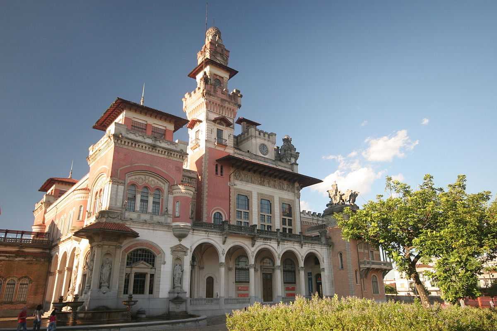
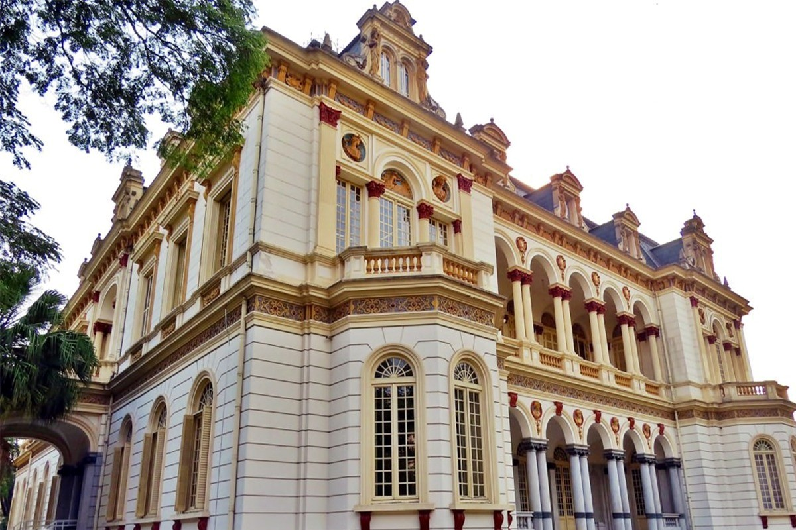
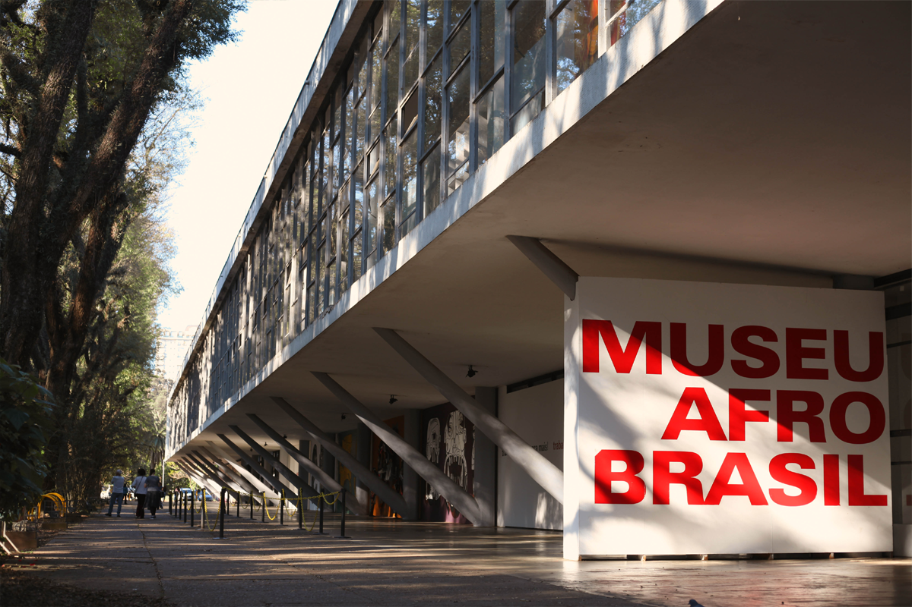
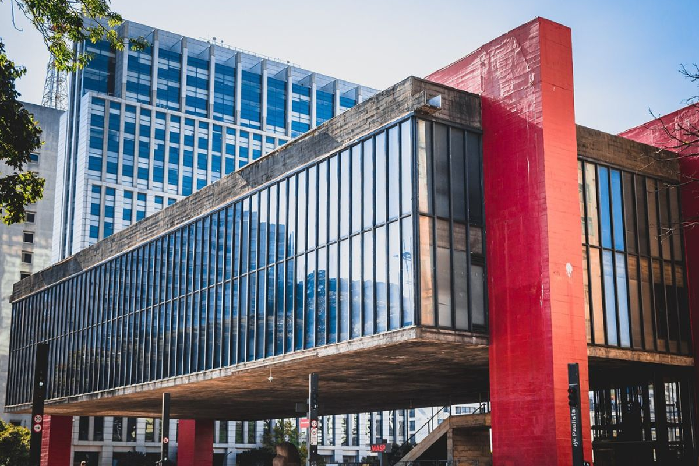
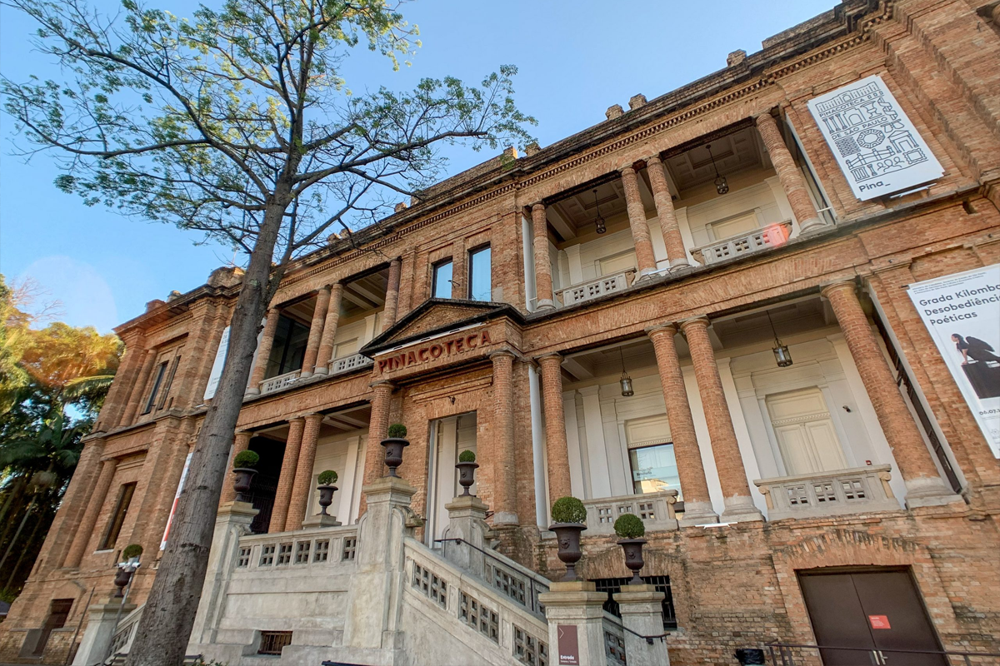

Catavento Cultural

Catavento é um incrível passeio para as crianças e até mesmo para os adultos que gostam de se
divertir enquanto aprendem. A atração está localizada no centro de São Paulo, em um edifício construído em 1924,
que já abrigou a prefeitura da cidade até 2004! O espaço guarda um museu interativo com 4 mil m² divididos em
quatro instalações: Universo, Vida, Engenho e Sociedade. Em cada um dos ambientes, o visitante tem a possibilidade
de interagir com o tema, seja com jogos eletrônicos, filmes em 3D ou exposições.
Onde: Pq. Dom Pedro II, Av. Mercúrio, s/n – Brás
Quando: Terça a domingo, das 9h às 17h
Quanto: R$6,00 (inteira); entrada gratuita aos sábados
Museu das Favelas

Trata-se de uma instituição que parte do passado, perfazendo o presente para contribuir com novos caminhos para o
futuro, partindo do princípio de que os caminhos para mudança precisam passar pelas favelas, por suas manifestações
culturais e pela potência dos que ali resistem, inovam e criam. E desta forma, busca ampliar o olhar, para além de
uma imagem cristalizada do que é a favela e, também, do que é um museu. Ele constrói uma visão expandida que inclui
também as vivências que partem de periferias, ocupações, assentamentos, regiões quilombolas, ribeirinhas, entre
outras; espaços distintos, mas que compartilham histórias de segregação e resistência.
Onde: Av. Rio Branco, 1269 - Campos Elíseos
Quando: Terça a Domingo, das 9h às 87h;
Quanto: Gratuito
Museu Afro Brasil

O Museu Afro Brasil foi fundado em 23 de outubro de 2004 e possui um acervo com mais de cinco mil
obras, produzidas desde o século XV, que representa a cultura africana e afro-brasileira.
Com pinturas, esculturas, gravuras, documentos, fotografias e peças etnológicas, o local abarca traços das diversas
representações da cultura africana e afro-brasileira, na perspectiva de autores nacionais e internacionais. O espaço
abriga ainda a Biblioteca Carolina Maria de Jesus com aproximadamente 6.800 publicações, com uma coletânea especial
de obras raras sobre tráfico atlântico e abolição da escravatura no Brasil, América Latina, Caribe e Estados Unidos.
Onde: Portão 10, Av. Pedro Álvares Cabral, s/n - Vila Mariana
Quando: Terça a Domingo, das 10h às 17h
Quanto: Ingresso: R$ 15,00 ;Ingresso de Estudante (apresentando carteirinha): R$ 7,50; de graça as quartas-feiras
MASP

O Museu de Arte de São Paulo Assis Chateaubriand (MASP). O museu que se consagrou
como cartão postal da nossa cidade, comporta uma coleção considerada a mais importante do Hemisfério Sul. Em seu
acervo estão obras assinadas por artistas como Renoir, Rembrant, Botticelli, Velázquez, Ticiano, Degas e Manet em
exposições permanentes, além das temporárias que são sempre muito interessantes.
Onde: Av. Paulista, 1578 - Bela Vista
Quando: Terça a domingo, 10h às 18h; quinta, das 10h às 20h
Quanto: R$35,00 (adulto); R$17,00 (estudantes, professores e maiores de 60 anos); entrada gratuita às terças
Pinacoteca

A Pinacoteca do Estado de São Paulo é um dos mais importantes museus de arte do Brasil. Ocupa um
edifício construído em 1900, no Jardim da Luz, centro de São Paulo, projetado por Ramos de Azevedo para ser a sede
do Liceu de Artes e Ofícios. É o mais antigo museu de arte de São Paulo, fundado em 1905 e regulamentado como museu
público estadual desde 1911. A Pinacoteca abriga um dos maiores e mais representativos acervos de arte brasileira,
com mais de dez mil peças que abrangem a história da pintura brasileira dos séculos XIX e XX.
Onde: Praça da Luz, 2 | Lg. General Osório,66 | Avenida Tiradentes, 273
Quando: De quarta a segunda, das 10h às 18h
Quanto: INTEIRA: R$ 30,00
MEIA-ENTRADA R$ 15,00
INGRESSOS ON-LINE: Valor do ingresso + R$ 2,00 de taxas